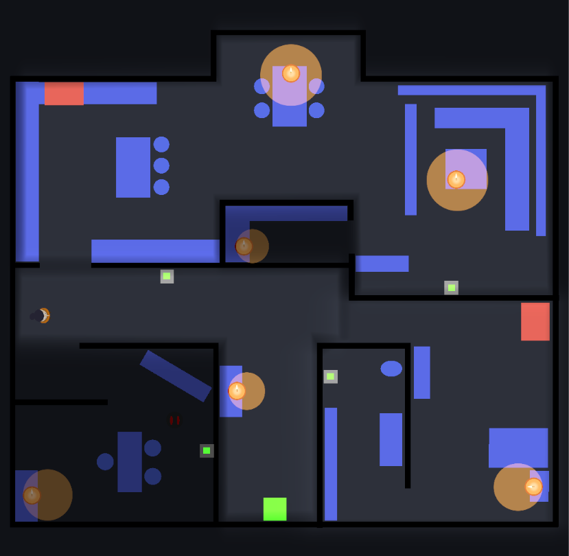

Theme
Singleplayer • 2D • TopDown • Strategy • Horror
Responsibilities
- Designed the core mechanic and game loop
- Brainstormed and prototyped multiple versions and iterations of the game
- Level design
Context
Monster in the dark is a small solo game design project
I created as my final exam assignment for my Game Design 2 class.
The assignment required students to brainstorm multiple game concepts inspired by a museum of their choice,
and then develop one of those ideas into a functional prototype.
The main focus of the project was game design, with an emphasis on brainstorming concepts, iterating on ideas and designing core gameplay mechanics.
Game
In this game, you're a kid left home alone on a dark evening. Your mission is simple: turn off all the lights in the house before going to sleep. But be careful, a monster is lurking in the dark.
The gameplay revolves around the core mechanic: light is safety, darkness is dangerous. The player is only safe when standing in any kind of light. They need to turn of all the lights(candles, ceiling lights via the lightswitches) and go to their room to stand on the green square to win.
I came up with this idea when I remembered how scared I used to get of the dark whenever I was home alone. I would hit the light switch and run upstairs as fast as possible. I'm certain a lot of people can relate, which is why I thought it would be perfect for a horror game.
Core design Choices
-
Lights
Lights are a very important part to the game, they mean safety from the monster, but are also an obstacle at the same time. To win, the player must turn off all the lights, but in doing that, it removes their protection. They know once the lights are off, they are in danger and that's terrifying. It's the core of the game. There are three different kinds of lights:
-
Candle lights
Candle lights serve as essential pitstops, small safe zones where the player can take a breath and rethink their strategy. They serve to help the player get to the light switch and out of the room. Important to note, candles don't go out themselves, the player must put them out themselves turning them also into obstacles. The player needs to plan in advance which candles to put out first, making sure they can still reach the next candle or get out before there's no light left.
-
Ceiling lights
Ceiling lights are the biggest source of light, capable of lighting up entire rooms. They can only be turned off using light switches(grey squares with a green center) which are strategically placed in each room to add challenge and tension.
For example, in an early level design, the kitchen lightswitch was placed right by the door. This allowed the player to just put out all the candles in the room first and then turn off the ceiling light when leaving, meaning they were never in the dark. As a result, the room felt too easy and lacked tension. To fix this, the lightswitch was moved deeper into the kitchen, forcing the player to go back through the dark to escape.
The light switch placements became essential to making the game both challenging and engaging. -
Red boxes lights
Strategically placed throughout the level, these red boxes emit a beam of light for a few seconds when activated. They represent everyday electronic devices like microwaves, TVs, and computers. While not required to win, they offer limited time protection and could be helpfull for players who need a quick moment of safety.
-
-
The monster
The monster is the player's main motivation, it's presence builds constant tension. The monster only moves when the player is in the dark, creating a constant sense of fear and urgency.
In early prototypes, the monster was completely invisible in the dark. However, while playtesting, it proved too frustating. Players couldn't see where the monster was, making escaping the dark rooms too difficult. To resolve this, I gave the monster red eyes that are visible in the dark without making the monster’s location too obvious.
I considered adding a limited use light source(ex: a flashlight or candle) that would provide temporary protection. A flashlight could reveal the monster's location, while a candle could offer protection by surrounding the player with light as long as they hold it. This would add more strategy to the game.
Sadly, due to limited time, I was unable to fully test or implement this feature.
-
Level design
The level design is crucial to make this concept work. It was important to give players the freedom to choose their own path and decide which rooms to clear first, rather then forcing them down one single linear path. This freedom gives players a sense of control, which a lot enjoy.
To make this possible, each room had to be designed so it could be completed in any order. The only constant that remained is that the Hallway(the room with the green box) is the final room. Designing each room with this purpose was a challenge, but it all worked out.
I started off with a paper prototype based off a real house plan to test and explore the level layout and core main gameplay(light). This gave me alot of good ideas for both the level design and mechanics.
After the paper prototype, I went on to design two different level layouts in miro:
-
First design
The first house plan design felt more natural and realistic, making it feel more like an actual house, which better supported the core concept and tone of the game.
-
Second design
This design, which used a series of the endless rooms, felt too random, vague, and episodic. It also lacked a clear end goal, which wasn't what I intended for the game. There should be a story and context to make the player truly feel like a scared kid alone in the dark.
I continued working on the first design, and after several playtest sessions and iterations, I finished this design before moving into Unity for implementation.
While working in unity, I made slight adjustments to the level design layout and eventually ended up with this final design. Unfortunately, due to time constraints, I was only able to implement the first floor.
 -
Software and tools
- Miro for brainstorming and documentation.
- Unity as the engine.
- Photoshop to create the visual assets